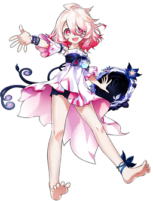

Mes réseaux sociaux
Mon twitter
Mon Twitch
Mon Discord
Mon Youtube
Mieux me connaitre
Petite présentation
Mes personnages favoris
Voici une petite liste de mes personnages préférés.
Zoé
Zoé est un personnage de league of legends avec un chara-design que j'aime particulièrement (notamment ses yeux vairons).
Elle est la manifestation du crépuscule qui peut tordre la réalité.
Son but principal est de s'amuser et cela se ressent dans ses paroles et dans les animations quand on la joue.
Gwen
Gwen est un personnage de league of legends
C'est à la base une poupée créer par la femme du roi déchu qui s'est éveillé grâce à la magie.
Son gameplay se base sur des coups de ciseaux et de lancer d'aiguille de couture.
Elle parle en vieux français ce qui lui donne un coté vraiment unique dans l'univers de league of legends.

Laby
Laby est un personnage du jeu Elsword.
C'est une démone qui à vécu a l'intérieur d'une forêt magique pendant 1000 ans avec comme seule amie son miroir qui s'appelle Nisha.
Celle-ci à comme capacité d'absorber les émotions négative de Laby et c'est sur cette caractérisque qu'elle évoluera dans le jeu.
Séraphine
Séraphine est un personnage de league of legends qui à eu le droit à une super communication de la part de riot.
Au début Séraphine (avant de sortir sur le jeu) s'est fait connaitre avec un compte twitter en tant que artiste indépendante où elle postait des covers et quelques musiques original sur sa page.
Petit à petit la communauté l'a vu grandir et passé de chanteuse indépendante à chanteuse professionel qui à pu faire une collaboration avec le groupe KDA (groupe fictif de League of Legends)
Ils ont ensuite fait un album de K-pop avec le groupe KDA et une chanson a donc Séraphine en featuring.
Son gameplay et son histoire se base principalement sur le chant.
Préséa
Préséa est un personnage de Tales of Symphonia.
Elle est bucheronne pour gagner de l'argent pour soigner son père qui est malade et ne peut plus faire son travail, pour cela elle à subit l'implantation d'une exsphere spécial (un cristal décuplant les pouvoirs dans le jeu) mais à cause de cela elle à perdu la plupart de ses émotions et n'as même pas pu se rendre compte que son père était mort de sa maladie
L'équipe principal du jeu arrive à la soigner et elle doit vivre son deuil tout le long du jeu.